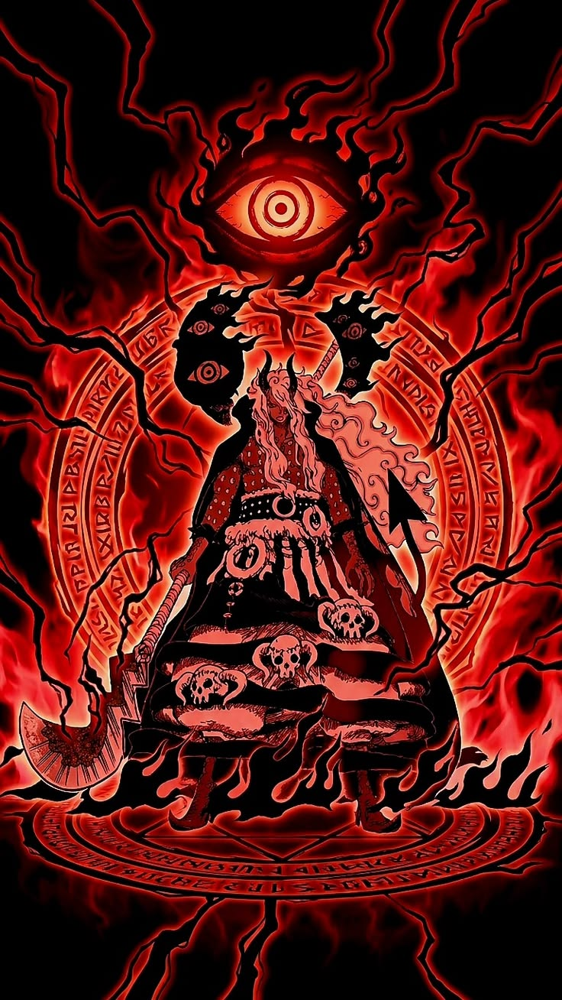
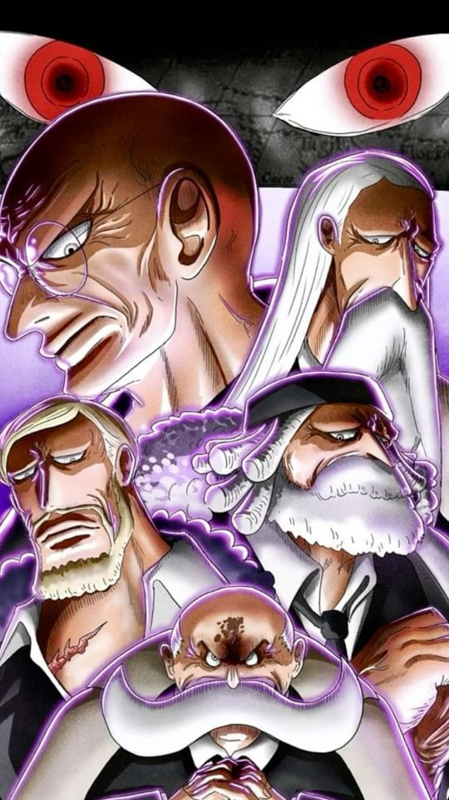
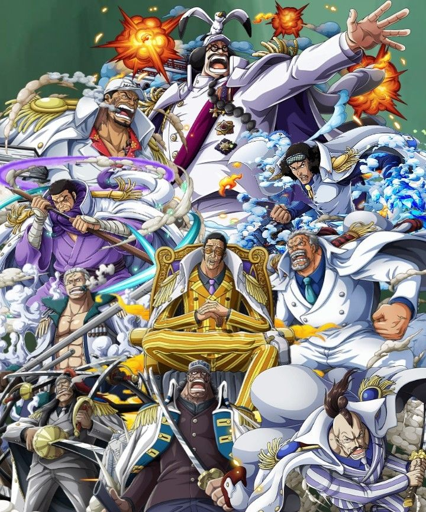

توجه: این متن شامل اسپویلرهای مانگا است. اطلاعاتی که هنوز در داستان قطعی نشدهاند، بهعنوان راز یا احتمال مطرح شدهاند.

ایمو، یکی از مرموزترین و تأثیرگذارترین شخصیتهای دنیای وانپیس است. شخصیتی که برای مدت بسیار طولانی هویت و حتی وجودش از چشم مردم جهان پنهان نگه داشته شده بود. درحالیکه تمام دنیا تصور میکرد دولت جهانی توسط پنج ارشد اداره میشود، حقیقت بسیار متفاوت بود: شخصی ناشناخته در بالاترین نقطه قدرت قرار داشت و حتی پنج ارشد نیز در برابر او سر تعظیم فرود میآوردند. ایمو در قلعه پانگیا واقع در ماریجوا زندگی میکند و بر تختی نشسته است که به نام «تخت خالی» شناخته میشود. این تخت از نظر تاریخی نماد برابری میان پادشاهان جهان و نشانهای از این بود که هیچ فردی نباید بهتنهایی بر تمام جهان حکومت کند. بااینحال، ایمو برخلاف این اصل، مخفیانه بر آن تکیه زده و عنوان فرمانروای واقعی جهان را در اختیار دارد.
یکی از مهمترین رازهای ایمو، ارتباط او با قرن گمشده است؛ دورهای از تاریخ که دولت جهانی تلاش کرده تمام اطلاعات مربوط به آن را از بین ببرد. حدود ۸۰۰ سال پیش، بیست پادشاه از بیست کشور مختلف با یکدیگر متحد شدند و ساختار اولیه دولت جهانی را به وجود آوردند. ایمو با خاندان نرونا و یکی از بنیانگذاران این ساختار ارتباط دارد. ایمو برخلاف بسیاری از شخصیتهای دنیای وانپیس، ظاهراً از گذر زمان تأثیر معمولی نمیپذیرد. اطلاعات مربوط به عمر و جاودانگی او هنوز بهطور کامل روشن نیست، اما شواهد داستان نشان میدهند که احتمالاً از زمان شکلگیری دولت جهانی تاکنون زنده مانده است.
قدرتهای ایمو از اسرار بزرگ داستان هستند. برخلاف شخصیتهایی که قدرتشان بهصورت مشخص معرفی شده، هنوز تمام تواناییهای او توضیح داده نشدهاند. برخی از تواناییها و ویژگیهای شناختهشده او عبارتاند از: قدرت مرموز و غیرعادی: ایمو تواناییهایی دارد که با قدرتهای معمولی شخصیتهای دیگر تفاوت زیادی دارند. تأثیرگذاری بر دیگران: او میتواند از طریق پیمانهای خاص، قدرتهایی به افراد موردنظرش بدهد و در مقابل، کنترل قابلتوجهی بر آنها داشته باشد. جاودانگی یا عمر بسیار طولانی: داستان نشانههایی از عمر غیرعادی او ارائه کرده است. قدرت سیاسی مطلق: حتی پنج ارشد نیز در برابر دستورات او اختیار چندانی ندارند. ارتباط با تاریخ باستان: شناخت او از جویبوی و حوادث گذشته نشان میدهد که اطلاعات بسیار مهمی درباره تاریخ جهان دارد.
یکی از مهمترین بخشهای داستان ایمو، ارتباط او با جویبوی است. جویبوی شخصیتی متعلق به قرن گمشده است که نامش با رازهای بزرگ جهان، پادشاهی باستانی و میوه نیکا ارتباط دارد. واکنش ایمو به قدرت هاکی جویبوی و اتفاقات مربوط به آن نشان میدهد که این دو شخصیت ارتباطی عمیق با یکدیگر داشتهاند. دشمنی میان آنها احتمالاً یکی از مهمترین بخشهای راز نهایی وانپیس خواهد بود.

پنج ارشد که با نام ژاپنی گوروسی (Gorōsei) نیز شناخته میشوند، بالاترین مقامات رسمی دولت جهانی هستند. این پنج شخصیت از اژدهایان آسمانی محسوب میشوند و در ظاهر، بالاترین قدرت سیاسی جهان را در اختیار دارند. آنها در قلعه پانگیا در ماریجوا مستقر هستند و مسئول تصمیمگیری درباره مهمترین مسائل سیاسی، نظامی و امنیتی جهاناند. وظایف آنها تنها به اداره کشورها محدود نمیشود؛ کنترل اطلاعات، جلوگیری از انتشار حقایق تاریخی، مقابله با تهدیدهای بزرگ و حفظ ساختار دولت جهانی نیز در اختیار آنها قرار دارد. نکته مهم این است که پنج ارشد برخلاف تصور اولیه، صرفاً سیاستمدار نیستند. در جریان اتفاقات اگهد مشخص شد که آنها تواناییهای رزمی و قدرتهای عجیب و بسیار خطرناکی دارند.
ساترن یکی از اعضای قدیمی پنج ارشد بود که مسئولیت حوزه علوم و دفاع را بر عهده داشت. او نقش بسیار مهمی در پروژههای علمی دولت جهانی، بهخصوص تحقیقات مرتبط با سلاحهای ویژه و پروژههای وگاپانک داشت. ساترن در آرک اگهد بهصورت مستقیم وارد میدان شد و قدرت واقعی پنج ارشد را به نمایش گذاشت. ظاهر و تواناییهای او شباهت زیادی به موجودی افسانهای به نام گیوکی داشت. او در نهایت پس از اتفاقات اگهد، به دستور ایمو از جایگاه خود کنار گذاشته شد و جانشینش گارلینگ شد.
مارس یکی از پنج ارشد و مسئول حوزه محیطزیست در ساختار دولت جهانی است. او شخصیتی آرامتر و حسابگر دارد و در تصمیمگیریهای مهم دولت جهانی حضور فعال دارد. در جریان حادثه اگهد، مارس نیز مانند دیگر اعضای گوروسی وارد میدان شد و توانایی تغییر شکل خود به موجودی عظیم و ترسناک را نشان داد. شکل هیولایی او بر اساس موجود افسانهای ایتسوماده طراحی شده است؛ موجودی اسطورهای با ظاهری شبیه پرندهای عظیم.
وارکوری یکی از قدرتمندترین اعضای پنج ارشد است که مسئولیت حوزه عدالت را بر عهده دارد. او شخصیتی بسیار سختگیر دارد و در برخورد با تهدیدهای دولت جهانی، رویکردی قاطعانه نشان میدهد. وارکوری در نبردهای مربوط به اگهد قدرت بدنی و استقامت فوقالعادهای از خود نشان داد. شکل هیولایی او به موجود افسانهای فنگشی شباهت دارد؛ موجودی شبیه گراز عظیمالجثه. یکی از ویژگیهای قابلتوجه او، هاکی بسیار قدرتمندش است.
نوسجورو یکی دیگر از اعضای پنج ارشد است که مسئولیت حوزه مالی را بر عهده دارد. او معمولاً شمشیری در دست دارد و در جریان اتفاقات اگهد، سرعت و توانایی رزمی بسیار بالایی از خود نشان داد. شکل هیولایی او به باکوتسو، موجودی افسانهای شبیه اسب اسکلتی، شباهت دارد. نوسجورو در مقابله با نیروهای حاضر در اگهد نقش مهمی داشت و تواناییهای رزمی او نشان داد که پنج ارشد تنها به قدرت سیاسی متکی نیستند.
جو پیتر پنجمین عضو این شورا است و مسئولیت حوزه کشاورزی را بر عهده دارد. برخلاف ظاهر نسبتاً معمولیاش، او نیز دارای قدرت تغییر شکل به یک موجود افسانهای است. شکل هیولایی جو پیتر به کرم شنی عظیمی شباهت دارد که در زیر زمین حرکت میکند. در جریان حادثه اگهد، او نیز در کنار دیگر اعضای گوروسی برای متوقف کردن اتفاقات جزیره وارد عمل شد.
پس از کنار رفتن ساترن، گارلینگ به دستور ایمو به جایگاه او در میان پنج ارشد منصوب شد. گارلینگ پیش از این یکی از چهرههای مهم شوالیههای خدا بود و سابقه حضور در اتفاقات مهمی مانند گاد ولی را دارد. ورود او به شورای پنج ارشد نشاندهنده تغییر مهمی در ساختار قدرت دولت جهانی است.
یکی از مهمترین نکات درباره ساختار قدرت دولت جهانی، رابطه میان ایمو و پنج ارشد است. در ظاهر، پنج ارشد بالاترین مقامات جهان هستند؛ اما حقیقت این است که آنها مستقیماً از ایمو دستور میگیرند. ایمو حتی میتواند درباره سرنوشت اعضای این شورا تصمیم بگیرد. اتفاقی که برای ساترن افتاد، نمونهای روشن از این موضوع بود. پنج ارشد همچنین مسئول اجرای بسیاری از تصمیمات مهم ایمو هستند؛ از پنهان نگهداشتن اطلاعات تاریخی گرفته تا مقابله با افرادی که ممکن است رازهای دولت جهانی را کشف کنند.
اهمیت ایمو و پنج ارشد در داستان وانپیس ایمو و پنج ارشد از مهمترین بخشهای معمای اصلی وانپیس هستند. آنها با تاریخ قرن گمشده، جویبوی، پادشاهی باستانی و رازهای دولت جهانی ارتباط دارند. در طول داستان، بسیاری از شخصیتها تصور میکردند که دشمن اصلی تنها دزدان دریایی یا نیروهای انقلابی هستند؛ اما آشکار شدن وجود ایمو نشان داد که پشت ساختار ظاهری دولت جهانی، قدرتی بسیار بزرگتر وجود دارد. اتفاقات اگهد نیز نشان داد که پنج ارشد آمادهاند شخصاً برای جلوگیری از افشای اسرار دولت جهانی وارد عمل شوند. با نزدیک شدن داستان به راز نهایی وانپیس، نقش ایمو و گوروسی احتمالاً بیش از هر زمان دیگری اهمیت پیدا خواهد کرد.

در دنیای وانپیس، در کنار دزدان دریایی و گروههای مختلفی که برای رسیدن به اهداف خود در دریاها سفر میکنند، سازمانی بسیار بزرگ و قدرتمند وجود دارد که بخش عظیمی از جهان را تحت کنترل خود دارد: دولت جهانی (World Government). دولت جهانی حدود ۸۰۰ سال پیش و پس از اتحاد بیست پادشاهی مختلف شکل گرفت. این سازمان با گذشت زمان قدرت و نفوذ خود را گسترش داد و توانست بیش از ۱۷۰ کشور را تحت پوشش خود قرار دهد. هدف رسمی دولت جهانی، برقراری نظم، حفظ صلح و جلوگیری از گسترش هرجومرج در جهان است. بااینحال، اتفاقات مختلف داستان نشان میدهند که این سازمان همیشه در مسیر عدالت واقعی حرکت نمیکند و گاهی برای حفظ قدرت خود، حقایق تاریخی را پنهان میکند و حتی با مردم و کشورهایی که تحت کنترلش هستند برخورد ناعادلانه دارد. دولت جهانی تنها از یک نیروی نظامی تشکیل نشده است؛ بلکه مجموعهای از سازمانهای نظامی، اطلاعاتی، امنیتی و سیاسی را در اختیار دارد که هرکدام وظایف متفاوتی بر عهده دارند.
نیروی دریایی یکی از مهمترین و شناختهشدهترین سازمانهای دولت جهانی است. وظیفه اصلی این نیرو محافظت از دریاها، مبارزه با دزدان دریایی، دستگیری مجرمان و حفظ امنیت کشورهای عضو دولت جهانی است. مارینها در سراسر جهان پایگاههای نظامی دارند و کشتیهای جنگی آنها در دریاهای مختلف گشتزنی میکنند. آنها همچنین در مواقع جنگ، نیروهای اصلی نظامی دولت جهانی محسوب میشوند. مارینها بهعنوان نماد عدالت در جهان شناخته میشوند و شعار معروف آنها «عدالت» است. بااینحال، تمام اعضای این سازمان دیدگاه یکسانی نسبت به عدالت ندارند. برخی از افسران مانند کوزان و اسموکر تلاش میکنند عدالت را بر اساس وجدان و حقیقت اجرا کنند؛ درحالیکه افرادی مانند ساکازوکی اعتقاد بسیار سختگیرانهای به عدالت مطلق دارند و برای اجرای آن از روشهای بسیار شدیدی استفاده میکنند.
نیروی دریایی دارای سلسلهمراتب نظامی مشخصی است. اعضا با توجه به تجربه، توانایی و جایگاه خود درجات مختلفی دارند.
مهمترین درجات و جایگاههای آن عبارتاند از:
فرمانده ناوگان (Fleet Admiral)
دریاسالار (Admiral)
معاون دریاسالار (Vice Admiral)
دریادار عقب (Rear Admiral)
کمودور (Commodore)
کاپیتان (Captain)
فرمانده (Commander)
ستوان فرمانده (Lieutenant Commander)
ستوان (Lieutenant)
افسران و سربازان رده پایینتر
دریاسالاران از قدرتمندترین اعضای نیروی دریایی هستند. آنها در عملیاتهای بسیار مهم شرکت میکنند و معمولاً برای مقابله با دزدان دریایی قدرتمند و تهدیدهای بزرگ به میدان فرستاده میشوند. در طول داستان، شخصیتهایی مانند آکاینو، آئوکیجی، کیزارو و فوجیتورا در جایگاه دریاسالار قرار داشتهاند. قدرت دریاسالاران بهاندازهای است که حضور آنها میتواند تعادل قدرت میان گروههای بزرگ دزدان دریایی را تغییر دهد.
فرمانده ناوگان بالاترین مقام نظامی در ساختار معمول نیروی دریایی است و بر عملیاتهای بزرگ، تصمیمات نظامی و فرماندهی دریاسالاران نظارت دارد. از شخصیتهای شناختهشدهای که این جایگاه را داشتهاند میتوان به سنگوکو و ساکازوکی اشاره کرد. عدالت در میان مارینها یکی از جذابترین موضوعات درباره نیروی دریایی، تفاوت دیدگاه اعضای آن نسبت به عدالت است. درحالیکه بعضی از مارینها اعتقاد دارند برای برقراری امنیت باید با تمام مجرمان برخورد کرد، برخی دیگر معتقدند که اجرای عدالت نباید باعث آسیب دیدن مردم بیگناه شود. همین تفاوت دیدگاه باعث شده است که نیروی دریایی برخلاف ظاهر یکپارچهاش، از شخصیتهایی با طرز فکرهای بسیار متفاوت تشکیل شود.
اژدهایان آسمانی که با نام نجیبزادگان جهان نیز شناخته میشوند، از قدرتمندترین و بانفوذترین افراد در ساختار سیاسی دولت جهانی هستند. آنها نوادگان خاندانهای سلطنتیای هستند که حدود ۸۰۰ سال پیش در تشکیل دولت جهانی نقش داشتند. پس از تأسیس دولت جهانی، بیشتر این خاندانها به ماریجوا رفتند و نسلهای بعدی آنها با عنوان اژدهایان آسمانی شناخته شدند. این افراد خود را از سایر انسانها برتر میدانند و به دلیل جایگاه خانوادگیشان از امتیازات ویژهای برخوردارند.
ژدهایان آسمانی در منطقهای به نام ماریجوا (Mary Geoise) زندگی میکنند. این منطقه روی خط قرمز (Red Line) قرار گرفته و مرکز اصلی دولت جهانی نیز محسوب میشود. زندگی آنها با تجملات فراوان، امکانات ویژه و محافظت شدید همراه است. قدرت و نفوذ اژدهایان آسمانی نفوذ سیاسی بسیار زیادی دارند و دستورات آنها میتواند تأثیر مستقیمی بر عملکرد سازمانهای مختلف دولت جهانی داشته باشد. حتی مارینها نیز موظفاند از آنها محافظت کنند و در صورت تهدید شدن یک اژدهای آسمانی، ممکن است یک دریاسالار برای رسیدگی به موضوع اعزام شود. یکی از مشکلات بزرگ این سیستم، نبود پاسخگویی واقعی بسیاری از اژدهایان آسمانی در برابر رفتارهایشان است.
یکی از تاریکترین جنبههای زندگی اژدهایان آسمانی، استفاده از بردهداری است. برخی از آنها انسانها را بهعنوان برده نگهداری میکنند و با دیگر موجودات زنده مانند دارایی شخصی رفتار میکنند. این موضوع یکی از دلایل اصلی نفرت بسیاری از مردم و گروههای آزادیخواه از ساختار دولت جهانی است.
خاندان دونکیشوت یکی از خاندانهای معروف مرتبط با اژدهایان آسمانی است. دونکیشوت دوفلامینگو در این خاندان متولد شد، اما پس از اتفاقات مربوط به خانوادهاش از جایگاه سابق خود فاصله گرفت. داستان این خاندان نشان میدهد که حتی در میان اژدهایان آسمانی نیز شخصیتهایی با دیدگاهها و تصمیمات متفاوت وجود دارند.
سایفر پول مجموعهای از سازمانهای اطلاعاتی و امنیتی دولت جهانی است. درحالیکه مارینها بیشتر بهصورت آشکار در دریاها فعالیت میکنند، مأموران سایفر پول معمولاً در پشت پرده کار میکنند. وظایف آنها شامل جمعآوری اطلاعات، جاسوسی، تحقیق درباره تهدیدهای سیاسی و اجرای مأموریتهای محرمانه است. سایفر پول در بخشهای مختلف جهان فعالیت دارد و اعضای آن میتوانند با هویتهای پوششی وارد سازمانها و کشورهای مختلف شوند.
واحدهای رسمی سایفر پول از CP1 تا CP8 شمارهگذاری شدهاند. علاوه بر آنها، دو واحد بسیار مهم دیگر نیز وجود دارند: CP9: یک سازمان مخفی و تخصصی که اعضای آن برای انجام مأموریتهای بسیار حساس و مقابله با دشمنان دولت جهانی آموزش دیدهاند. CP0: یکی از مهمترین و قدرتمندترین واحدهای سایفر پول که مستقیماً در خدمت اژدهایان آسمانی فعالیت میکند. از شخصیتهای شناختهشده این سازمان میتوان به روب لوچی، کاکو و استوسی اشاره کرد.
شوالیههای خدا یکی از گروههای ویژه و قدرتمند مرتبط با اژدهایان آسمانی هستند. این گروه وظایف امنیتی و نظامی خاصی دارد و در ماریجوا از منافع و جایگاه اژدهایان آسمانی محافظت میکند. شوالیههای خدا برخلاف مارینها که در سراسر دریاها فعالیت میکنند، بیشتر با مسائل مربوط به ماریجوا و قدرت خاندانهای نجیبزاده ارتباط دارند. آنها همچنین در اتفاقات بسیار مهم تاریخی حضور داشتهاند. از شخصیتهای مرتبط با این گروه میتوان به سنت فیگارلند گارلینگ اشاره کرد. وجود این سازمان نشان میدهد که دولت جهانی برای حفاظت از بالاترین طبقه حاکم، نیروهایی فراتر از نیروی دریایی و سازمانهای اطلاعاتی در اختیار دارد.
ایمپل داون زندان بزرگ و فوقامنیتی دولت جهانی است. این زندان برای نگهداری دزدان دریایی، مجرمان خطرناک و افرادی ساخته شده که دولت جهانی آنها را تهدیدی جدی میداند. ایمپل داون در زیر آب قرار دارد و ساختار آن از چندین طبقه تشکیل شده است. هر طبقه برای نگهداری گروه متفاوتی از زندانیان طراحی شده و هرچه به طبقات پایینتر برویم، شرایط نگهداری سختتر میشود. از شخصیتهای شناختهشده مرتبط با این زندان میتوان به مَگِلان، رئیس سابق زندان، و هانیابال اشاره کرد. حادثه فرار بزرگ از ایمپل داون یکی از اتفاقات تأثیرگذار داستان وانپیس بود و تأثیر زیادی بر وضعیت جهان گذاشت.
هفت جنگسالار دریا گروهی از دزدان دریایی بسیار قدرتمند بودند که با دولت جهانی همکاری میکردند.
این گروه با وجود دزد دریایی بودن اعضایش، از حمایت رسمی دولت جهانی برخوردار بود.
در مقابل همکاری با حکومت، جایزه تعیینشده برای اعضای آنها متوقف میشد و اجازه داشتند تحت شرایط خاص به فعالیت خود ادامه دهند.
هدف دولت جهانی استفاده از قدرت این دزدان دریایی برای مقابله با سایر دزدان دریایی و حفظ تعادل قدرت در جهان بود.
از اعضای معروف این گروه میتوان به شخصیتهای زیر اشاره کرد:
دراکیول میهاوک
کروکودایل
دوفلامینگو
بارثولومیو کوما
گکو موریا
بوآ هانکوک
جینبه
این سیستم بعدها به دلیل سوءاستفاده برخی اعضا و تصمیمات سیاسی دولت جهانی منحل شد.
پس از انحلال شیچیبوکای، اعضای سابق آن دوباره در معرض تعقیب قرار گرفتند.
رای مدت طولانی، قدرت جهان وانپیس بر اساس سه نیروی بزرگ شناخته میشد: نیروی دریایی و دولت جهانی: ساختار رسمی قدرت و نیروهای نظامی حکومت. چهار امپراتور دریا: قدرتمندترین دزدان دریایی که هرکدام قلمرو و نیروهای بزرگی در اختیار دارند. هفت جنگسالار دریا: دزدان دریایی قدرتمندی که با دولت جهانی همکاری میکردند. این سه گروه بهعنوان سه قدرت بزرگ شناخته میشدند و وجود آنها نقش مهمی در تعادل سیاسی و نظامی جهان داشت. با انحلال سیستم هفت جنگسالار، ساختار قدیمی تعادل قدرت تغییر کرد و دولت جهانی به سمت استفاده از فناوریهای جدید مانند سرافیمها حرکت کرد.